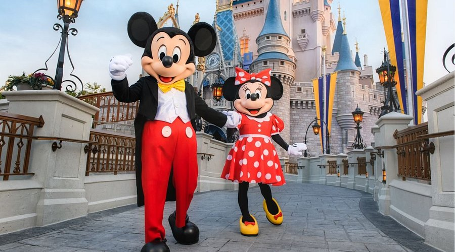

Magic Kingdom
Publicado el 10 de Mayo, 2025

Magic Kingdom es el parque más emblemático y visitado de Disney, ubicado en Walt Disney World Resort, Florida. Este parque es el corazón de la magia de Disney, donde se encuentran atracciones clásicas y experiencias que capturan la esencia de los cuentos de hadas.
En Magic Kingdom vas a encontrar el famoso Castillo de Cenicienta, símbolo del parque y uno de los puntos más fotografiados del mundo. Acá vas a poder disfrutar de desfiles temáticos, espectáculos de fuegos artificiales y conocer a tus personajes favoritos en encuentros personales.
Las atracciones más populares incluyen Space Mountain, Pirates of the Caribbean y Haunted Mansion. Es un parque ideal para familias, con opciones para todas las edades, desde juegos suaves para niños pequeños hasta montañas rusas emocionantes.
Además, Magic Kingdom ofrece una experiencia culinaria muy variada, desde snacks rápidos hasta cenas con personajes Disney. Si te gusta probar cosas nuevas, no podés irte sin una Dole Whip o los famosos Mickey waffles.
🎢 Atracciones imperdibles
Space Mountain: Montaña rusa en la oscuridad con temática espacial.
Pirates of the Caribbean: Aventura en barco con piratas animatrónicos.
Haunted Mansion: Recorrido misterioso en una mansión encantada.
📹 Video recomendado: Desfile de Magic Kingdom
🎟️ Datos útiles
- 📍 Ubicación: Orlando, Florida
- 🕒 Horarios: Todos los días de 9:00 a 22:00 hs
- 🎆 Shows imperdibles: Happily Ever After (fuegos artificiales) y Disney Festival of Fantasy Parade
- 💳 Tip: Usá la app de Disney para ver tiempos de espera y mapas en vivo
← Volver al inicioEn resumen, Magic Kingdom es la esencia pura de la magia Disney, perfecta para quienes quieren vivir la fantasía y disfrutar de un ambiente lleno de nostalgia y diversión.